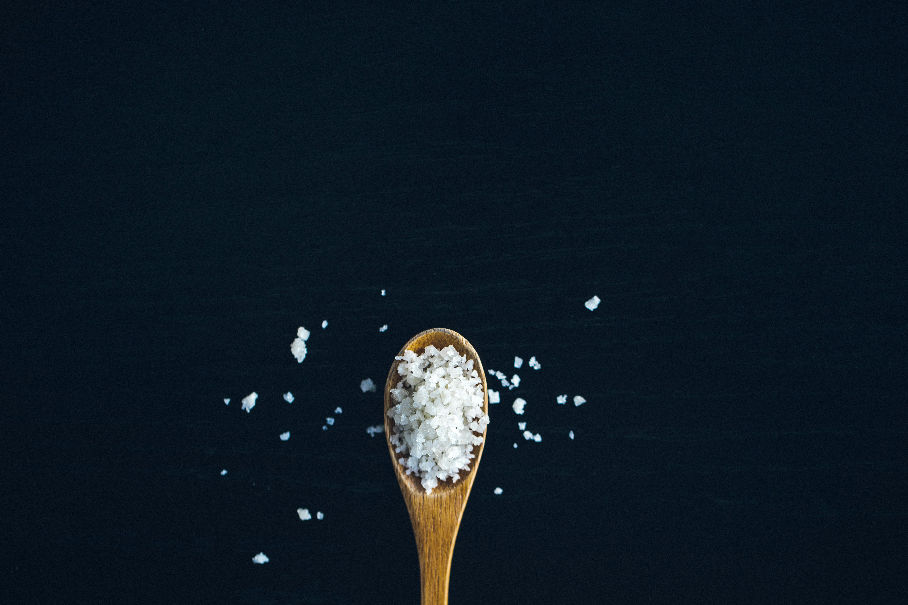

We test every batch. We publish every result. Here's what's in your salt.
Arsenic · Cadmium · Mercury — not detected.
Lead — 0.05 mg/kg. A naturally occurring trace element in seawater. 95% below the legal limit for food-grade salt.
Aluminum — 3.9 mg/kg. Naturally occurring. Well within the range of the cleanest salts independently tested.
Third-party verified by SGS México. Full lab reports available to download.
| Metal | Result | Detection Limit | EU Max | Status |
|---|---|---|---|---|
<0.01 mg/kg |
0.01 mg/kg | 0.5 mg/kg | Not Detected | |
<0.01 mg/kg |
0.01 mg/kg | 0.5 mg/kg | Not Detected | |
<0.01 mg/kg |
0.01 mg/kg | 0.1 mg/kg | Not Detected | |
0.05 mg/kg |
0.01 mg/kg | 1.0 mg/kg | 95% Below EU Max | |
3.9 mg/kg |
1.0 mg/kg | —* | Naturally Occurring |
* No EU regulatory maximum established for aluminum in food-grade salt.
The wellness conversation around aluminum is real, and we take it seriously — which is why we tested for it.
Salt is a minor source of dietary aluminum compared to grains, vegetables, tea, and food additives. At normal salt consumption, the contribution from salt is a small fraction of daily intake from all sources combined.
The 3.9 mg/kg in Zafra is consistent with the lowest levels found in independently tested sea salts.
Lead is a naturally occurring element in the earth's crust, present at trace levels in coastal sediments and seawater worldwide. Every sea salt contains some measurable amount; a result of zero typically reflects the detection limit of the lab, not the absence of lead in nature. Our result of 0.05 mg/kg is 20 times below the EU's legal maximum for food-grade salt (Regulation 2023/915, Annex I), and consistent with low-contamination sources in published sea salt literature.
Yes. Every batch is independently tested for heavy metals — arsenic, cadmium, mercury, lead, and aluminum — by SGS México, an EMA-accredited laboratory. Results are published in full at zafrasalt.com/testing. Our lead result is 0.05 mg/kg, 95% below the EU's legal maximum for food-grade salt.
A small, naturally occurring amount — 0.05 mg/kg. Lead is present in the earth's crust and measurable at trace levels in virtually every sea salt on the market. A result of zero typically means the lab's detection limit was reached, not that lead is truly absent. Our result is 95% below the EU legal maximum for food-grade salt and at the low end of published sea salt data.
An accredited third-party laboratory — not us — analyzed the salt for arsenic, cadmium, mercury, lead, and aluminum using ICP-MS, the gold standard method for trace metal detection. The lab's full reports, including sample ID, lot number, method, and detection limits, are available for download at zafrasalt.com/testing.